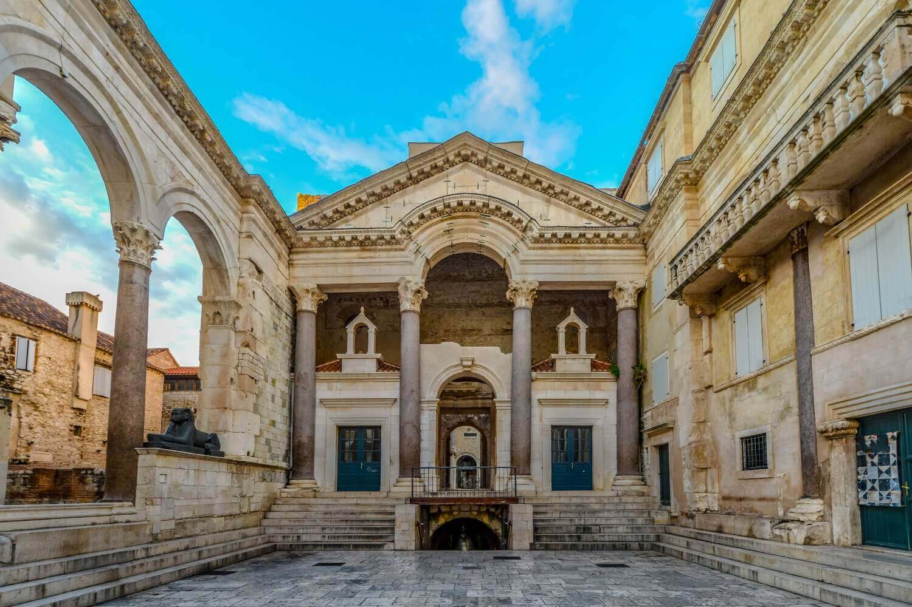
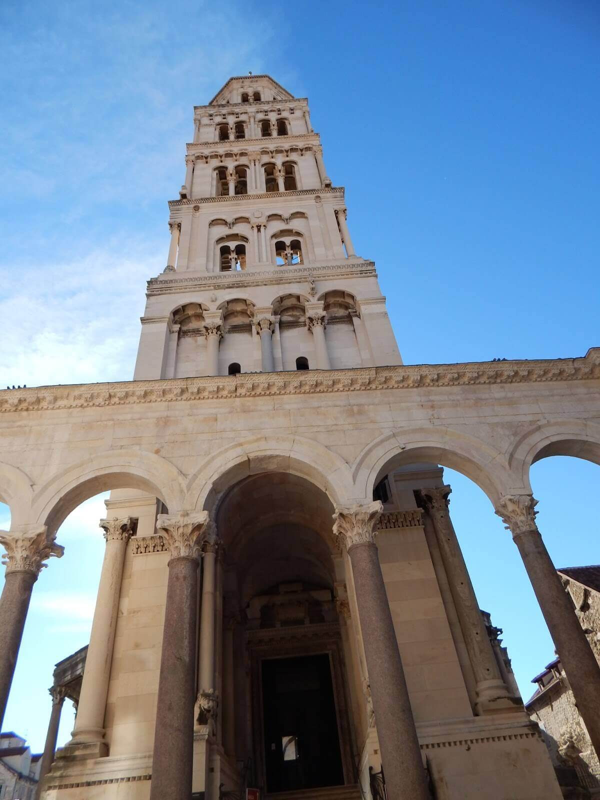

Split je po veličini drugi grad u Republici Hrvatskoj i najveći hrvatski grad na istočnoj obali
Jadranskog mora.
Obrubljen planinama, Mosorom na sjeveroistoku i Kozjakom na sjeverozapadu, smjestio se između rijeka
Žrnovnice na istoku
i Jadra na sjeveru, uranjajući na zapad u more svojim poluotočnim dijelom, na kojem se ističe
marjanska šuma te
prelazeći na otok Čiovo. Čak 15 kilometara šetnica uz more čini idealan spoj sa kamenim ulicama
staroga grada šireći
njime duh Sredozemlja.Prema popisu stanovništva iz 2011. godine, ima 178.192 stanovnika.
Hrvatski nogometni klub Hajduk Split (HNK Hajduk Split) je hrvatski nogometni klub iz Splita.
Najveće je športsko
društvo u Splitu i jedno od većih u Hrvatskoj. Domaće utakmice igra na Gradskom stadionu u
Poljudu. Kroz bogatu povijest
klub je osvojio 18 prvenstava u pet država, 15 nacionalnih kupova i 5 superkupova, a najveći
europski uspjesi su mu tri
četvrtzavršnice Lige prvaka te po jedna poluzavršnica Kupa UEFA i Kupa pobjednika kupova.
Hrvatski nogometni klub Hajduk
Split (HNK Hajduk Split) je hrvatski nogometni klub iz Splita. Najveće je športsko društvo u
Splitu i jedno od većih u
Hrvatskoj. Domaće utakmice igra na Gradskom stadionu u Poljudu.
Tutti Frutti-Dalmacijo
Znamenitosti
Dioklecijanova palača je jedan od najbolje sačuvanih spomenika rimskoga graditeljstva na
svijetu. Povijesna cjelina
Splita s Dioklecijanovom palačom uvrštena je 1979. na UNESCO-ov popis svjetske kulturne baštine.
Careva je palača bila sagrađena kao spoj luksuzne vile - ljetnikovca i rimskog vojničkog logora
(castruma),
podijeljenoga na četiri dijela dvjema glavnim ulicama. Južni dio Palače bio je u toj shemi
predviđen za cara, njegov
stan i odgovarajući državni i vjerski ceremonijal, dok je sjeverni bio za carsku stražu -
vojsku, poslugu, za spremišta
i slično. Palača je pravokutna građevina sa četiri velike kule na kutovima, vratima na svakoj od
četiri strane i sa po
četiri manje kule na zidovima.


Među europskim katedralama splitska ima za sjedište najstariju građevinu - mauzolej rimskog cara
Dioklecijana. U njoj,
na koncu drugog milenija, povijest izmiruje pogansku antičku, kršćansku srednjovjekovnu i
modernu baštinu. Mauzolej
cara-progonitelja kršćana postaje sredinom 7. stoljeća katedralom u kojoj su na počasnim
mjestima postavljeni oltari s
relikvijama Svetog Dujma i Svetog Staša, mučenika pogubljenih u obližnjem Solinu.
Izvana četvrtastog, iznutra kružnog tlocrta, Vestibul, to staro carsko predvorje i danas djeluje
monumentalno. A kako li
je tek fasciniralo u svojoj prvotnoj potpunosti: polukružne niše s kipovima; velika kupola sa
svjetlucavim mozaikom u
bojama, o čemu svjedoči Marko Marulić svojim rukopisom iz 16. stoljeća; bjelina rotondastog
zida.